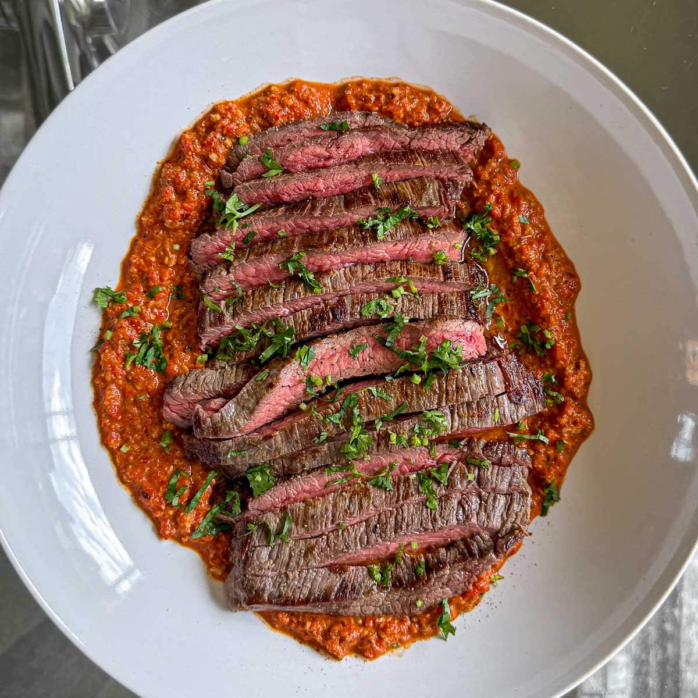

Marinated Flank Steak with Muhammara
Home

Description
This Marinated Flank Steak with Muhammara is one of my favourite steak dinners. Flank steak is such an underrated cut. It’s affordable, full of flavour and takes brilliantly to marinades.
ingredients
- Flank steak
- Garlic
- Lemon
- Extra-virgin olive oil
- Vegetable oil
- Roasted red peppers
- Walnuts
- Raw garlic
- Pomegranate molasses
- Pul biber
- Ground cumin
- Flat-leaf parsley
Steps
- Pat the steak dry on both sides and season generously with salt.
- In a shallow dish just big enough to hold the steak in a single layer, add the olive oil, garlic and lemon slices. Add the steak and turn it to coat in the marinade, making sure both sides are well covered. Leave to sit at room temperature for 20 to 30 minutes.
- Meanwhile, place all the cheat’s muhammara ingredients in a food processor with a good pinch of salt and pepper. Blitz until mostly smooth–it should still have a bit of texture. Transfer to a bowl and refrigerate until ready to use. Note: The dip will keep well in the fridge for 3 to 4 days.
- Heat a splash of vegetable oil in a large frying pan (ideally cast iron or stainless steel, but non-stick works too) over medium-high heat.
- Scrape off any bits of garlic or lemon stuck to the steak–they’ll burn in the pan. Cook the steak for 3 to 4 minutes on each side for medium-rare, or longer if you prefer it more well done.
- Transfer to a board and let it rest for 5 minutes–don’t skip this or the juices will run everywhere.
- To serve, spread the cheat’s muhammara across a large plate. Slice the steak against the grain (this is key–cutting with the grain will make it chewy). Pile the slices on top of the muhammara, scatter with parsley if using, and serve.